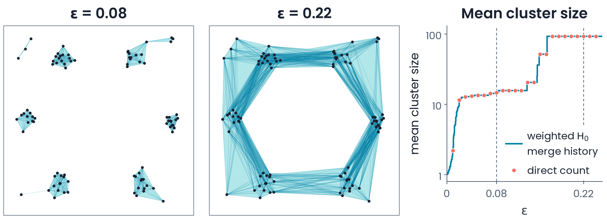

Hi, I'm James Raj!
Physics PhD student at UCLA, advised by Mason Porter.
About Me

I am a fifth-year physics PhD student at UCLA, advised by Mason Porter. My research is in complex systems and statistical physics, and most of it concerns networks. I am most interested in physical learning, in which networks of springs or resistors learn a task through local rules (each edge adjusts itself using only what it can measure), and in how the structure of a network limits what such rules can learn and how quickly.
I am also interested in living networks that adapt by similar local rules, such as slime molds and blood vessels that reorganize around the flow that they carry, and synapses that change with neural activity. Alongside physical learning, I work on topological data analysis and its connections to the statistical physics of clustering, and on spatial networks, including disordered metamaterials that our experimental collaborators 3D-print.
Before UCLA, I studied physics at Cal Poly, San Luis Obispo, where I worked on memory in sheared suspensions with Hilary Jacks and Nathan Keim, and I spent a year in Glenn Fredrickson's group at UC Santa Barbara simulating reactive polymer blending. I expect to finish my PhD in June 2027 and am looking for postdoctoral positions.
Current Research

To compare structures fairly, we use a task that is defined on the whole network, with no source or target nodes to choose: clearing a window of vibrational frequencies in a disordered spring network, so that none of its eigenfrequencies lies inside the window. In our local rule, random forces at frequencies inside the window drive the network, and each spring changes its stiffness using only the motion of its own two nodes. No step computes an eigenfrequency, so the same rule can train materials far too large for centralized design.
Whether the rule succeeds, and how quickly, depends strongly on the structure of the network. Delaunay and Watts-Strogatz networks typically clear the window, whereas many runs on Erdős-Rényi networks never do. Even rewiring a Watts-Strogatz network so that every node keeps its number of edges more than doubles the time that it takes to learn.

Eigenfrequency distributions before and after training for one representative run on each of four network families, with the target window shaded. Beside each histogram is the corresponding trained network, with each edge coloured by its learned weight.

In the scale-rich metamaterials of Both et al. (2025), ligament thicknesses span orders of magnitude. With Charles Emmett Maher, Katherine Newhall, and Mason Porter, I model these materials as spatially embedded networks of beams that can be printed directly. A graph conductance on the network predicts how the stiffness depends on the direction of loading (though not its magnitude), without a mechanical simulation for each direction.

Directional effective resistance Reff becomes more anisotropic as the heterogeneity parameter α grows. Left: an illustrative scale-rich network with α = 1. Middle: Reff along different directions for one realization with α = 1, whose largest and smallest values differ by a factor of about 15. Right: the ratio of the largest to the smallest Reff, averaged over 5,000 realizations for each α.

Persistent homology, a tool from topological data analysis, records the scales at which clusters of points merge, but the observables of statistical physics depend on the sizes of the merging clusters. Charles Emmett Maher, Katherine Newhall, Mason Porter, and I are developing a size-resolved persistent homology that records these sizes, which links topological data analysis directly to the statistical physics of clustering.

A clustered pattern of 92 points and its Vietoris-Rips simplicial complex at three values of the filtration radius ε (points within 2ε of each other are joined). As ε grows, the six clusters connect into a loop, which then fills in. Persistent homology tracks when such features appear and disappear.

Hyperuniform point patterns are disordered but suppress density fluctuations at large length scales, and they appear in settings from leaf vein networks to the large-scale distribution of galaxies. With Xiaohan Sun, Charles Emmett Maher, Katherine Newhall, and Mason Porter, I showed that, for three of the four ways of building networks that we compared, networks from hyperuniform patterns have smaller total effective resistances than networks from Poisson patterns. In an NSF DMREF collaboration, the groups of Karen Daniels and Christopher Rock at NC State 3D-print networks that I design, and we are working out why their specific modulus depends on how a network is built.

Poisson (top) and hyperuniform (bottom) point patterns, their Delaunay networks, and their structure factors S(k). Hyperuniform patterns suppress long-wavelength density fluctuations, so S(k) → 0 as k → 0.
Publications
Personal
Hobbies
I love baking! I make everything from sourdough and pizzas to croissants, brioche rolls, cookies, and all sorts of other things. I enjoy making a lot of the recipes from Claire Saffitz's YouTube channel. I'm also really into chess, both playing and watching. My peak rating is 2150 on Chess.com Rapid, though I try not to think about where it is right now.
Music
Some of my favorite artists are yeule, Sufjan Stevens, Quadeca, Jane Remover, Porter Robinson, and Alex G. If I had to pick one album, it would be Sufjan Stevens' Carrie & Lowell. If you haven't listened to it, I'd really recommend it. See more of my favorite songs →
Contact
Office: Mathematical Sciences (MS) 7611